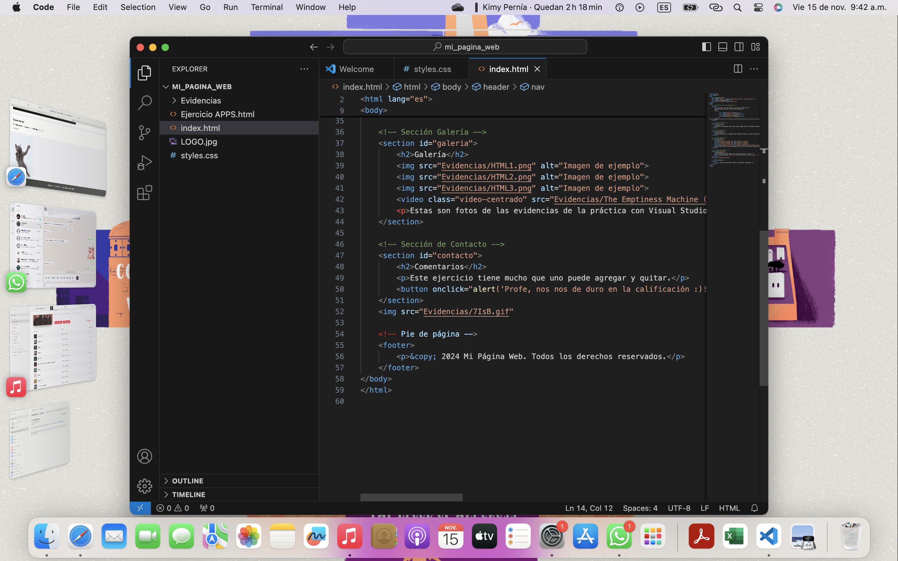
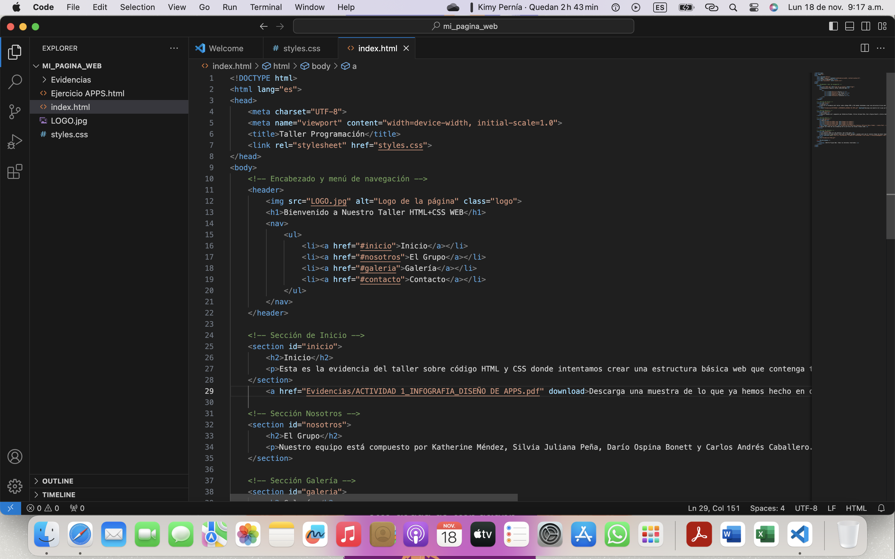

Esta es la evidencia del taller sobre código HTML y CSS donde intentamos crear una estructura básica web que contenga textos, menú, imágenes e interacción, elementos que servirán para crear el prototipo de la actividad número dos de este módulo.
Nuestro equipo está compuesto por Katherine Méndez, Silvia Juliana Peña, Darío Ospina Bonett y Carlos Andrés Caballero. Somos estudiantes de la Maestría en Tecnología e Innovación Educativa de la Universidad Santo Tomás.
 Este ejercicio tiene muchas cosas que se pueden agregar y quitar para que el usuario tenga una mejor experiencia.